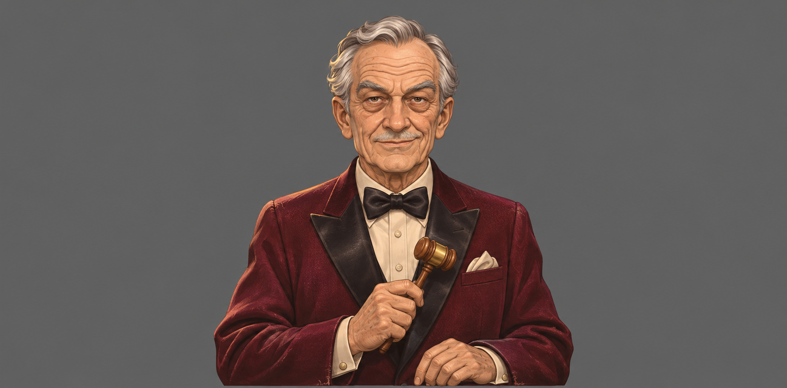
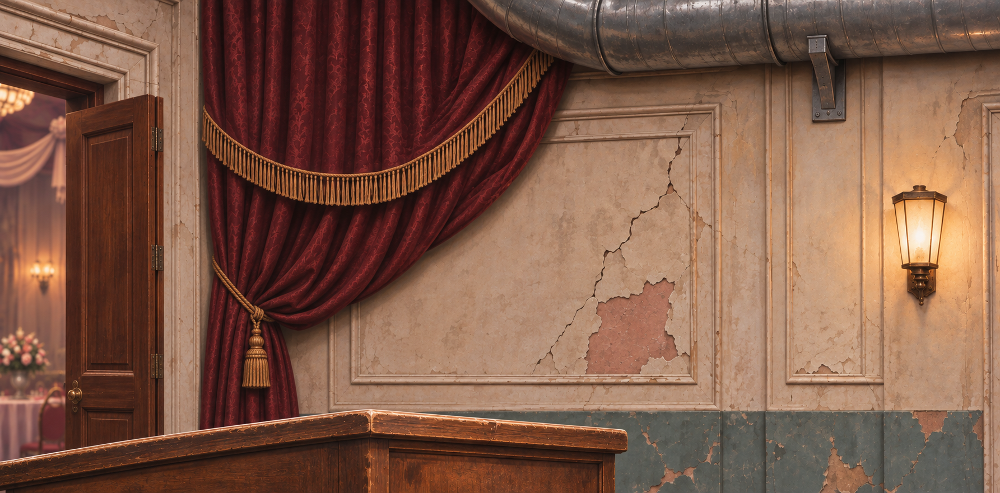

Chapter 4 · v05 rendering review
CH4-01 / CH4-02 / CH4-03 · UNSELECTED · November 22, 2026
Priority: reconstruct the frontal auctioneer’s facial character, hair, hands and costume with native pixel-brush painting. Keep v04 as the room base and make only specified carpet/plaster/lamp/wall corrections. Judge against the actual approved human NPC art, not file dimensions or color count. Review at 1× first. The approved artwork is a comparison target; passing file checks does not establish equivalent craft.
Manifest / hashes · Per-asset assessment · Owner direction · Verbatim storyboard requirements · Native authorship / image QA · Browser QA · Targeted room changes
CH4-03 · Auctioneer — detailed frontal portrait
Preserve the frontal elderly identity, proportions, silhouette and low-held gavel. Rebuild the socket/weighted lids/brows to reduce the startled stare; paint nuanced forehead/crow’s-foot/cheek/nose/mouth/neck marks, neutral silver locks, knuckles/grip and gavel wood, cloth folds/seams, satin crests and cotton construction. Use layered native pixel-brush pigment marks over a reconstructed substrate rather than another global procedural face-lighting pass.
Review limitation: The result remains an illustrated, relatively graphic candidate; it is not claimed to match the approved receptionist/Pavilion finish automatically. Owner must judge whether the face, hair, hands and costume now have sufficient natural craft and character.
v04 — preserved working base · 564×278v05 — unselected · 564×278v03 — historical · 564×278 Approved Receptionist foreground · native comparison
Direct v04/v05 comparison PNG · Native PNG · 4× PNG · Editable native source · Reconstruction brief
SHA-256 525d0ae1b0ee363427454f9da0e712308ea037efc684dfdcb4d636526449f30b
Preserved v01 candidate
Original detailed concept reference — unchanged

Study reference; not the authored native source.
Earlier profile concept — preserved, superseded by frontal direction
Show the unchanged original detailed profile reference

CH4-01 · Grand Bellevue Lobby — targeted wear corrections
Continue the v04 working composition unchanged. Replace repetitive carpet islands with an uneven lower-contrast walking track, broken nap and short scuffs. Replace decorative plaster chips with moisture tracks below real duct fixings, corner cracks and lower-wall impact/damp loss. Successful lighting, perspective, ductwork, furniture, flowers and simple NPCs are byte-preserved outside the correction mask.
Review limitation: These remain small-scale illustrated wear cues. Judge whether their placement and contrast look natural at native size; no creative acceptance is implied by the mask checks.
v04 — preserved working base · 314×206v05 — unselected · 314×206v03 — historical · 314×206 Approved Bureau · native comparison
Direct v04/v05 comparison PNG · Native PNG · 4× PNG · Editable native source · Reconstruction brief
SHA-256 582bcd51de937e5fe124160a8beb74b4ee469f52eeb6d9d0d38b918cfb0d6be0
Preserved v01 candidate
Original detailed concept reference — unchanged

Study reference; not the authored native source.
CH4-02 · Auctioneer background — lamp and wall corrections
Continue v04. Replace the three obvious lamp rings with a weak continuous falloff only on the actual lamp panel; add low-contrast native plaster repair/finishing marks to blank wall areas. Curtain construction, duct wear, molding and fixtures are preserved outside the wall correction mask.
Review limitation: The lamp-wall falloff is computed locally as illumination, not a whole-image style pass. Blank-wall variation is deliberately subtle; assess it beside the approved receptionist background.
v04 — preserved working base · 564×278v05 — unselected · 564×278v03 — historical · 564×278 Approved Reception background · native comparison
Direct v04/v05 comparison PNG · Native PNG · 4× PNG · Editable native source · Reconstruction brief
SHA-256 b2f11966c5b598b1869803f35eb38d00006f346c40a563118c4bdb0eacadf77f
Preserved v01 candidate
Original detailed concept reference — unchanged

Study reference; not the authored native source.
Canonical approved-art comparisons
Bureau and Control Tower set the scene benchmark. Receptionist background and foreground set the close-up finish target. All benchmark PNGs are byte-unchanged; none was regenerated.
Bureau · native and exact 4×
Control Tower · native and exact 4×
Reception scene · native and exact 4×
Reception background · native and exact 4×
Receptionist foreground · native and exact 4×
Pavilion attendant · native and exact 4×
Pavilion presenter · native and exact 4×
| Axis | v05 assessment |
|---|
| Native scale | 314x206 lobby, 564x278 separate opaque background and binary-transparent foreground. Review actual artwork at 1x before 4x inspection. |
| Anatomy and expression | Frontal proportions/silhouette retained; sockets and lower brows reconstructed, upper lids weighted, mouth and smile folds defined, neck/jowl planes repainted. Intended expression is slightly cantankerous and dignified; owner must judge it. |
| Meaningful portrait detail | Native brush marks add forehead/crow’s-foot/eyelid/cheekbone/nose/mouth detail, grouped silver locks and strands, a wrapped gavel grip, gavel bevel/grain, cloth seams/folds and cotton/satin distinctions. More marks do not automatically equal sufficient craft. |
| Ramps and palette | Hand-chosen pigment colors and local brush mixtures; neutral silver hair, warm skin, muted burgundy, charcoal satin and ivory are compared directly with approved human NPCs. No arbitrary global palette quota or color-count quality score. |
| Environment scope | Lobby edits are limited to carpet wear and architectural plaster damage. Background edits are limited to lamp-panel light and blank-wall variation. Explicit changed-pixel masks and protected fixture/geometry checks prove successful details are retained. |
| Lighting and materials | Retain v04 room lighting and pose. One local wall-light falloff replaces visible rings; no new broad mathematical face/cloth rendering pass. Brush layers illustrate material/anatomical structure. |
| Reference comparisons | Actual receptionist, Pavilion attendant and presenter art are shown with v04/v05, the unchanged frontal study and original hotel concepts. Earlier v01/v02/v03 galleries remain intact. |
| Export and review | Native and exact 4x comparisons, direct PNGs, transparent foreground, layered composite and targeted-delta evidence are included. QA establishes file/preservation properties only; all candidates stay UNSELECTED. |
No declaration of artistic acceptance is made. The frontal portrait and illustrated material finish still require owner selection. Earlier versions remain byte-unchanged. Room correction masks and preservation checks are in evidence/targeted-change-qa.json. Nate selects the standard before any restroom/ballroom revision.